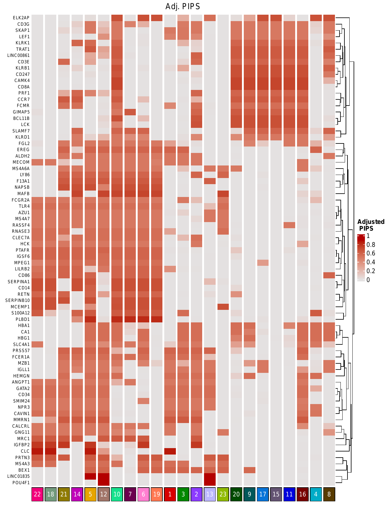

This tutorial demonstrates how to replicate NCLUSION clustering results for 43,690 acute myeloid leukemia (AML) cells obtained from van Galen et al 2019 (PAPER REF HERE). Open a bash terminal and follow along with the tutorial from your working directory.
First, install NCLUSION into a Julia environment following the installation instructions here. The NCLUSION tutorials also require installation of additional R, python, and Julia libraries. These packages are NOT required for running NCLUSION only.
R is a widely used, free, and open source software environment for statistical computing and graphics. The most recent version of R can be downloaded from the Comprehensive R Archive Network (CRAN). CRAN provides precompiled binary versions of R for Windows, macOS, and select Linux distributions that are likely sufficient for many users’ needs. For detailed installation instructions for R and R libraries click here.
The following R libraries are required for replicating results in the NCLUSION tutorials:
The easiest method to install these packages is with the following example command entered in an R shell:
if (!require("BiocManager", quietly = TRUE))
install.packages("BiocManager")
BiocManager::install(c("SingleCellExperiment", "ComplexHeatmap",
"clusterProfiler", "enrichplot", "org.Hs.eg.db"))
install.packages(c('devtools',
'ggplot2',
'reticulate',
'R.utils',
'stringr',
'Matrix',
'Seurat',
'dplyr',
'RColorBrewer',
'tidyverse',
'scales',
'cowplot',
'RCurl',
'optparse',
'circilize',
'geneset',
'genekitr',
'patchwork'),
dependencies = TRUE);We recommend that users install python packages into a new Anconda environment. Details for installing Anaconda and setting up a new environment can be found here.
Packages that are required to run NCLUSION tutorials include:
To install these packages, activate a new Anaconda environment and enter the following commands into a bash terminal:
conda install -c conda-forge scanpyconda install -c anaconda pandasconda install -c conda-forge matplotlibconda install -c conda-forge numpyconda install -c conda-forge anndataIn addition to NCLUSION, you will need to have the following Julia packages installed:
To install these packages, first start a Julia repl in your NCLUSION Julia environment usingjulia --project=/PATH/TO/JULIA/ENV
where /PATH/TO/JULIA/ENV is the relative path to the NCLUSION Julia
environment, or whichever Julia environment you want to use. Then, install the
required packages by entering the following commands into the Julia repl:
import Pkg; Pkg.add.(["DataFramesMeta", "Hyperopt", "BlackBoxOptim",
"Turing", "RCall", "Hungarian", "Combinatorics"])To exit the Julia repl, enter exit().
wget https://microsoft.github.io/nclusion/tutorial_scripts.zip
unzip tutorial_scripts.zipThe van Galen + 2019 scRNA-seq data contains 43,690 acute myeloid leukemia
(AML) cells taken from 16 AML patients, 5 healthy donors, and 2 cell lines. It
is comprised of 13,489 patient-derived malignant cells, 23,005 non-malignant
donor cells, 6,018 cells from the MUTZ-3 AML cell line, and 1,178 cells from the
OCI-AML3 cell line. The filtered, raw counts can be downloaded from here.
Alternatively, run the following wget commands to create a directory named
tutorial_data/ in your current working directory and download the
data, named as Seurat_AML.rds, into that directory.
mkdir -p tutorial_data/
mkdir -p tutorial_data/vanGalen2019/
cd tutorial_data/vanGalen2019/
wget https://www.dropbox.com/s/399x045zc57fiut/Seurat_AML.rds?dl=0 --content-disposition
cd ../../
Before running NCLUSION to cluster the van Galen + 2019 cells, the data must be
converted to an AnnData object and preprocessed. Enter the following command
into a bash terminal to extract the count and meta data from the
.rds object and save them as dataframes to .csv files,
named 'tutorial_data/vanGalen2019/galenAML_countsdf.csv' and
'tutorial_data/vanGalen2019/galenAML_metadf.csv', respectively.
NOTE: if you want to load packages from a specific R library, append --rlib="/PATH/TO/R/LIBRARY" onto
this command.
. tutorial_scripts/convert_galen_dtype.sh --datapath="tutorial_data/vanGalen2019/Seurat_AML.rds"tutorial_data/vanGalen2019/5000hvgs_vanGalen2019_preprocessed.h5ad.
. tutorial_scripts/preprocess.sh --datapath="tutorial_data/vanGalen2019/" --savepath="tutorial_data/vanGalen2019/5000hvgs_vanGalen2019_preprocessed.h5ad" --data_name="vanGalen" --n_hvgs=5000.
preprocess.sh --help
To run NCLUSION from your working direcorty, enter the following bash
command. NOTE: set the --julia_env variable to the
relative path to your Julia project environment where NCLUSION is installed.
mkdir -p vanGalen2019_outputs
. tutorial_scripts/run_nclusion.sh --datapath='tutorial_data/vanGalen2019/5000hvgs_vanGalen2019_preprocessed.h5ad' --julia_env='PATH/TO/JULIA/ENV' --data_name='vanGalen2019' --output_dir='vanGalen2019_outputs/'All NCLUSION output files can be found in a sudirectory of the specified output
directory:
vanGalen_outputs/. The complete path for the output direcotry
generated by NCLUSION is as follows:
vanGalen_outputs/outputs/EXPERIMENT_nclusion_vanGalen2019/DATASET_vanGalen2019_5000HVGs-43690N/YEAR_MONTH_DATE_TIME/
where "YEAR_MONTH_DATE_TIME/" is equivalent to the time stamp of the results,
following the year-month-date-time format (i.e 2023-09-19T224247). An example of
the full output path might be:
vanGalen_outputs/outputs/EXPERIMENT_nclusion_vanGalen2019/DATASET_vanGalen2019_5000HVGs-43690N/2023-09-19T224247/. NOTE: 'YEAR-MONTH-DATE-TIME'
labels in the output path/files corresponds to the time stamp of when the
results were generated. The time stamp is added automatically by NCLUSION.
In the output directory, you can find the following output files:
To evaluate the clustering results, NCLUSION automatically calculates
various extrinsic evaluation metrics: Adjusted Rand Index (ARI), Jaccard Index, Normalized
Mutual Information (NMI), and Variation of Information (VarInfo). Extrinsic metric calculations dependent on
experimental annotations of the data, that act as the "true" labels. Therefore, extrinsic metrics are
only calculated when "true" labels are provided in the "cell_type" observation
layer of the input AnnData object. The metric calculations are
automatically saved to .csv files in the specified output
directory. Each file is labeled with the
name of the metric, appended to '_Summary.csv'.
Next, generate a heatmap that displays how cells from each cell-type (determined by the "true" labels obtained from van Galen et al 2019) are distributed across clusters that are identified by NCLUSION. Each row, i, represents one cell-type, and each column, j, represents one cluster. Therefore the color intensity at location (i, j) on the heatmap corresponds to percent of cells with "true" cell-type label i that were assigned to cluster j by NCLUSION.
To generate the heatmap from the NCLUSION result, enter the following commands into a bash terminal. NOTE: be sure to replace --nclusion_results input with the relative path to your NCLUSION clustering results.
. tutorial_scripts/make_heatmap.sh --nclusion_results="/PATH/TO/NCLUSION/CLUSTERING/FILE" --pct_table="vanGalen2019_outputs/cell_distribution_table.csv" --cluster_dict="vanGalen2019_outputs/cluster_mapping_to_new_label.csv" --save_heatmap="vanGalen2019_outputs/cell_distribution_heatmap.pdf"This will produce a pdf file named vanGalen2019_outputs/vanGalen_cell_distriubtion_heatmap.pdfcontaining the cell distriubtion heatmap shown
below. The
column labels do not correspond to NCLUSION's cluster labels. The script labels
each cluster with their positional values in the heatmap for aesthetic purposes. A
mapping of the original NCLUSION cluster labels to these new positional labels can
be found in a file named vanGalen2019_outputs/mapping_cluster_to_new_label.csv
Now, we will plot the t-distributed stochastic neighbor embedding (tSNE) for the data annotated with various labels: the called cell type labels that were published along with the data, and the NCLUSION-inferred cell type labels. We will also generate tSNEs corresponding to the boolean label of each cells' membership to a given NCLUSION-inferred cluster, such that cells assigned to cluster n are colored and all other cells are greyed out. The total number of tSNEs produced are equal to the total number of NCLUSION-inferred clusters plus two. However, for the sake of refining this analysis, we only display cluster membership tSNEs for clusters of interest. Run the following command to generate these plots. NOTE: be sure to replace --nclusion_results input with the relative path to your NCLUSION clustering results.
. tutorial_scripts/make_tsnes.sh --datapath="tutorial_data/vanGalen2019/5000hvgs_vanGalen2019_preprocessed.h5ad" --nclusion_results="/PATH/TO/NCLUSION/CLUSTERING/FILE" --data_name="vanGalen2019"
mv figures/ vanGalen2019_outputs/All tsnes produces by this script can be found in the output directory:
vanGalen2019_outputs/figures/.
Next, analyze results of NCLUSION's variable selection functionality to gain insight into the biological mechanisms driving the formation of each cluster. The reulting plots are described in detail in the following sub-sections. To generate these plots, enter the following command into a bash terminal.
NOTE: if you want to load packages from a specific R library, append --rlib="/PATH/TO/R/LIBRARY" onto
this command.
NOTE: be sure to replace --nclusion_results, --pips, and --path_to_nk inputs with the relative path to your clustering assignment, PIP, and Nk results files (generated by NCLUSION).
. tutorial_scripts/analyze_results
--datapath="tutorial_data/vanGalen2019/5000hvgs_vanGalen2019_preprocessed.h5ad"
--pips="/PATH/TO/PIPS/FILE"
--nclusion_results="/PATH/TO/NCLUSION/CLUSTERING/FILE"
--output_dir="vanGalen2019_outputs/" --data_name='vanGalen2019' --mapping="vanGalen2019_outputs/cluster_mapping_to_new_label.csv" --path_to_nk="PATH/TO/NK/FILE"All plots produced by this script can be found in the specified output
directory: vanGalen_outputs/
directory. Each plot is described in detail below.
We generated a heatmap that displays adjusted Posterior Inclusion Probabilities (PIPs) of genes across clusters identified by NCLUSION. PIPs represent the probability that a given variable (gene) is present in the true model of the cells' biology, and its value ranges from 0-1. For a particular cluster, a higher PIP indicates that a gene is more significant to the formation of that cluster. Before generating this heatmap, the plotting script adjusted the PIP values to account for the number of clusters in which it is deemed significant. For example, if a gene is deemed to be significant in driving all clusters, its PIP score will be scaled down, as it is less helpful for identifying important differences between each cluster compared to unique significant genes that are identified in fewer clusters. Only genes with adjusted PIPs above a threshold of 0.5 are included in this analysis.
The script also generated heatmap representing the effect size of the genes included in the adjusted PIP heatmap, which is shown below. For a given cluster, the effect size of each gene indicates whether that gene is upregulated (+) or downregulated (-) relative to cells in other clusters.
In addition to the heatmaps, this script generated module expression violin plots for select clusters of interest. Each violin plot compares the expression of significant genes identified in a particular cluster to the expression of those genes in the other clusters.
Lastly, this script geneated plots that display biological pathway enrichment analysis of cells in each cluster of interest we identified in the previous section. For each cluster, these pathways are identified based on the expression of genes with significant PIPs (>0.5).